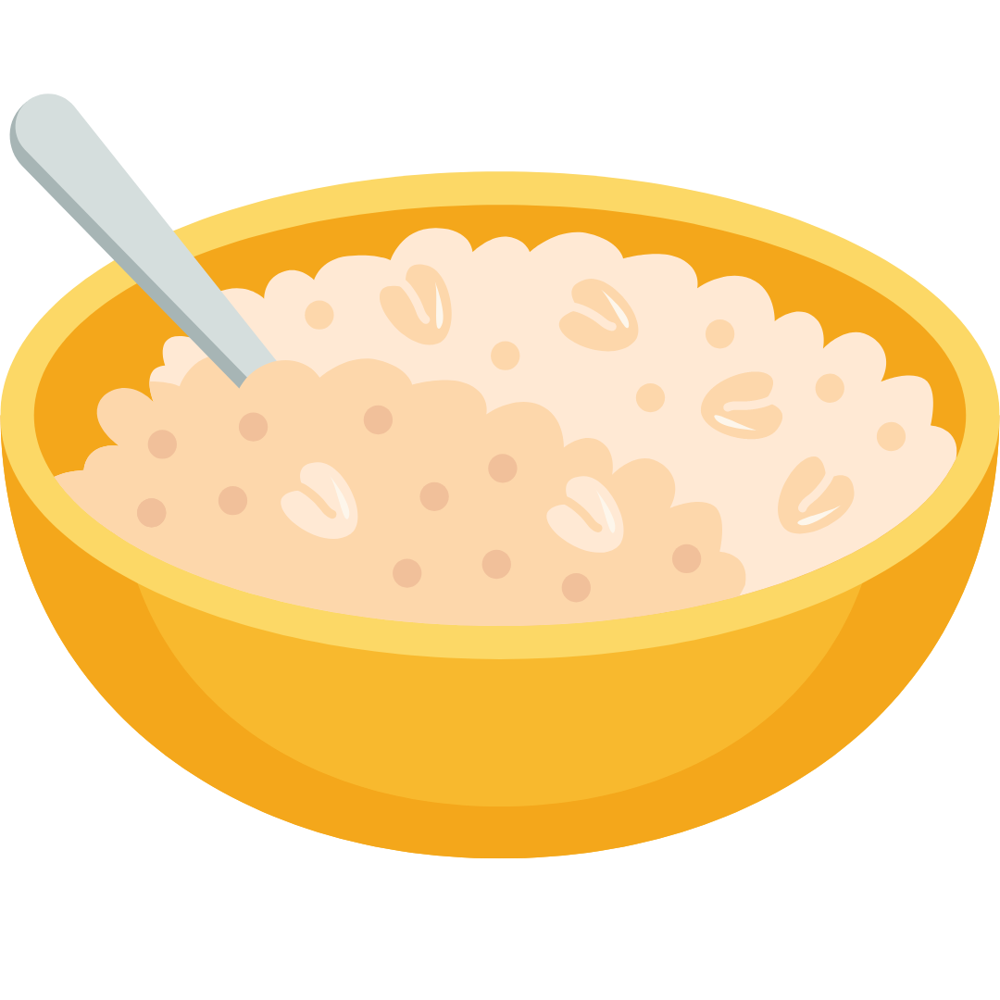
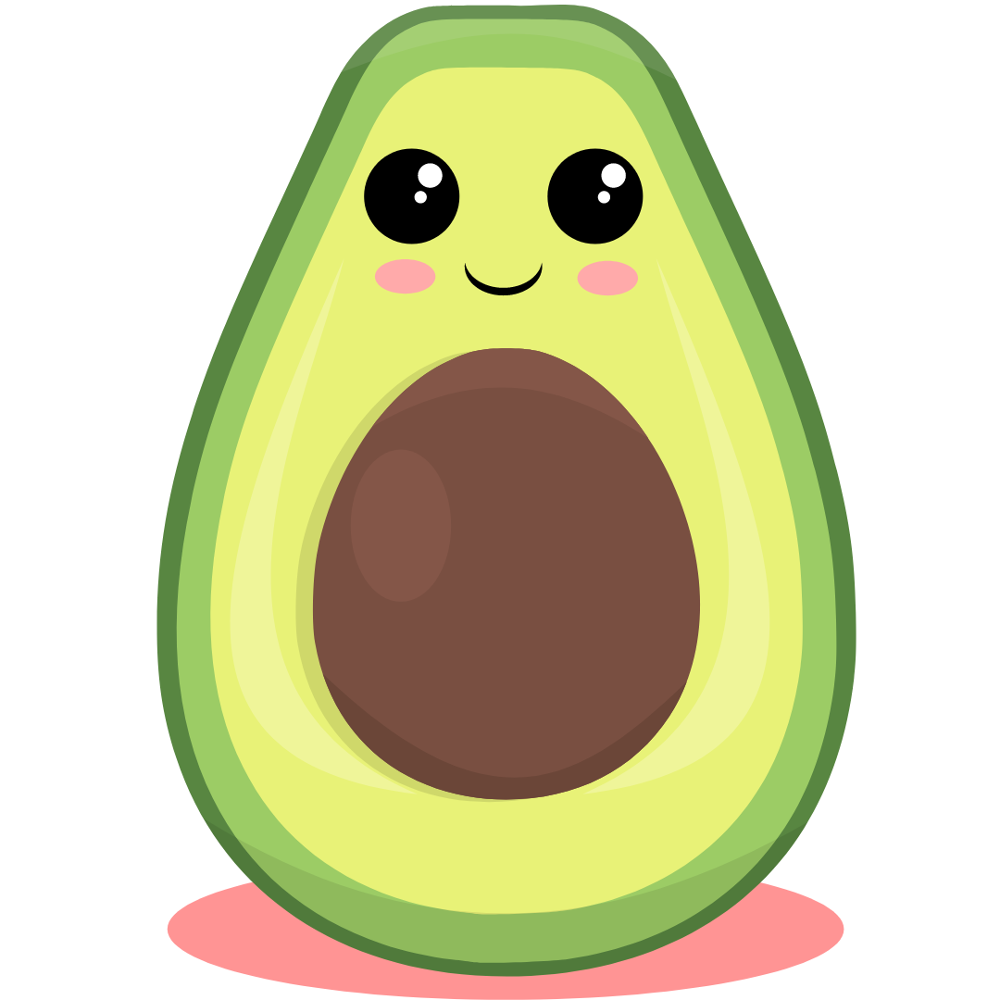
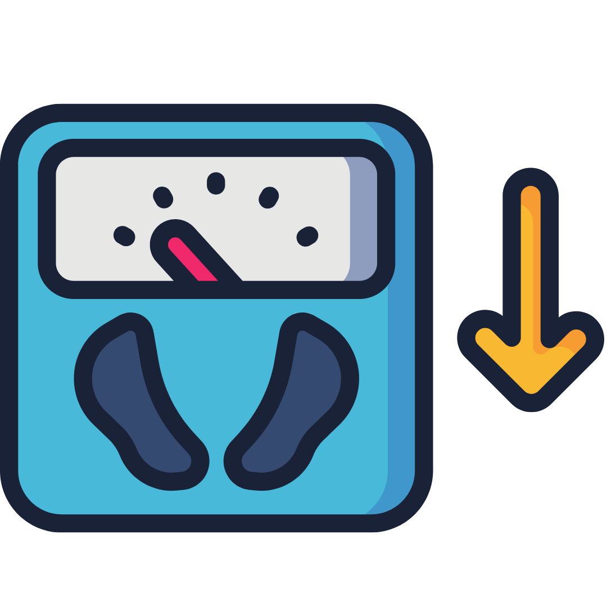
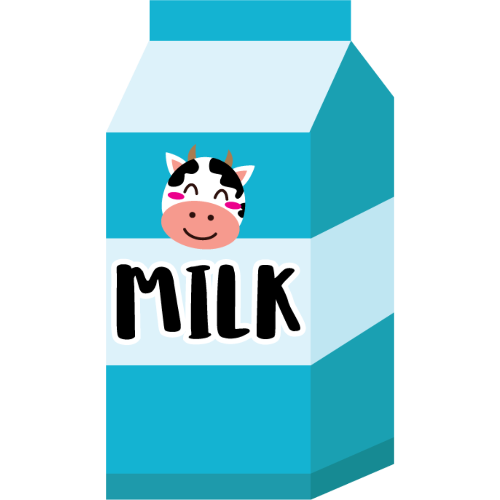

Breakfast is often considered the most important meal of the day. When you wake up from overnight sleep, you may not have eaten for up to 10 hours. Breakfast replenishes energy in your body along with a positive mindset. It supplies glucose to boost your energy levels and alertness while providing other essential nutrients for good health. Foods rich in whole grains, proteins, fibre and good fats can help provide your body with energy that helps keep your body and brain energy levels sustained for the rest of the day.
Good Fats are often referred to as mono-saturated fats, which are preferred to reduce heart disease. These heart-healthy fats are typically a good source of the antioxidant vitamin E. They can be found in olives, avocados, cashews, sesame, and pumpkin seeds. Tips to help you reduce the total amount of fat in your diet and make sure the fats you consume are the healthy ones.
Meal replacement has been used for weight loss as a successful strategy. Dietary composition may also have a role in preventing weight regain after weight loss. Healthy diets recommend low carbohydrate, low GI, and moderate fat foods, but it is unclear whether they help prevent weight gain. It seems that consuming fewer calories helps people to maintain weight loss. Some examples of such behaviours are consuming a lower amount of sugar-sweetened beverages, not being awake late at night, and consuming more healthy foods.
This proverb means that eating an apple each day keeps you healthy. Apples are so full of vitamins and nutrients that if you eat one every day, you will not become sick and will therefore not have to visit the doctor. Apples help us reduce high blood pressure and heart disease and lower the risk of cancer. Quercetin, a reddish pigment considered an antioxidant found in apples, protects against Alzheimer’s disease and provides relief from allergies.
When your skin is exposed to sunlight, it makes vitamin D from cholesterol. The sun’s ultraviolet B (UVB) rays hit cholesterol in the skin cells, providing the energy for vitamin D synthesis to occur. Only a handful of food items contain Vitamin D. These include cod liver oil, swordfish, salmon, canned tuna, beef liver and egg yolks .It’s important to note that the sun’s UV rays cannot penetrate through windows. So people who work next to sunny windows are still prone to vitamin D deficiency.
The faster you eat, the more food you will tend to eat. Chewing your food many times at a slower pace can reduce your overall food intake. Chewing more during mealtime was found to reduce snacking on candies later in the day and also reduce snacking on candies later in the day .Proper digestion starts in your mouth. When eating, be sure to chew your food thoroughly to get the full benefit out of it.
Calcium is a mineral needed to build and maintain strong bones, and Vitamin D helps our body absorb calcium from the foods we eat. Since milk is a great source of both of these nutrients. Being a milk drinker could help lower your risk of developing type 2 diabetes. This means that the more regularly people consumed dairy, the less likely they were to develop the disease. From improving bone health to helping mitigate cognitive decline, drinking milk and incorporating other dairy items into your diet can come with some health benefits.
